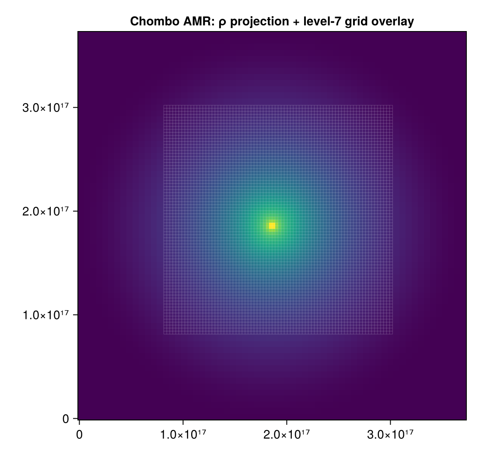
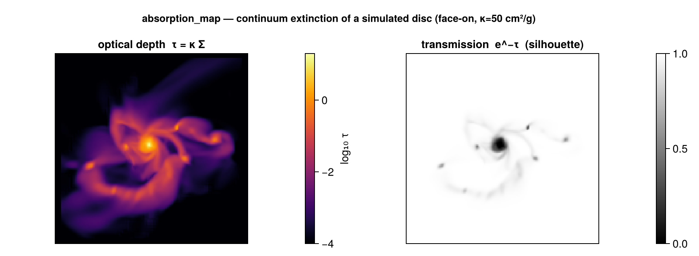

AMR Grid Overlay & Absorption
Two analysis additions inspired by features in PLUTO's pyPLUTO and yt: drawing the AMR grid structure over a map, and a line-of-sight absorption (optical-depth / transmission) map.
AMR grid overlay
gridoverlay returns the cell-boundary line segments of the AMR cells at a chosen refinement level, viewed along an axis — the analogue of yt's annotate_grids and pyPLUTO's oplotbox. Overlay them on a projection or slice to see where the mesh refines.

using Mera, CairoMakie
p = projection(gas, :rho)
go = gridoverlay(gas; level=:max, direction=:z) # finest-cell boundaries (:max/:min/an integer)
fig = Figure(); ax = Axis(fig[1,1], aspect=DataAspect())
heatmap!(ax, p.maps[:rho])
gridoverlay!(ax, go; color=(:white,0.3)) # convenience helper (needs `using Makie`)gridoverlay returns (segments, extent, level) — segments is a vector of (x1,y1,x2,y2) in the plane coordinates, de-duplicated. Pick a coarser level for a sparser overlay; restrict with xrange/yrange/zrange. (Axis-aligned views :x/:y/:z.)
Absorption: optical depth & transmission
absorption_map is the absorption counterpart of emission_map. It projects the column density Σ = ∫ρ dl with the exact off-axis engine, then returns the optical depth τ = κ·Σ, the transmission e^{-τ}, and the absorbed fraction 1 - e^{-τ} — a continuum extinction / silhouette image.

a = absorption_map(gas; kappa=50.0) # κ = 50 cm²/g (grey/dust-like opacity)
# heatmap of a.transmission → a silhouette / extinction image
# heatmap of a.tau → the optical-depth map
a = absorption_map(gas; kappa=50.0, los=fr.los, up=fr.up, center=fr.center) # off-axiskappa is in units inverse to sd_unit (default :g_cm2, so κ is in cm²/g and τ is dimensionless). All projection view/region keywords pass through. Returns (tau, transmission, absorbed, sd, kappa_eff, extent, los, up, center, pixsize, info) (kappa_eff is the column-effective opacity τ/Σ).
Variable opacity — κ that depends on physics
The opacity is rarely truly grey. kappa may instead be per-cell, so it can depend on wavelength, metallicity, gas phase, temperature or ionization. The optical depth is then the exact τ = ∫κρ dl = ⟨κ⟩_mass·Σ:
- a
Real→ grey (above); - a
Symbol→ a per-cell opacity field — anygetvarfield, anadd_field- registered field, or a raw data column (e.g. a stored metallicity); - an
AbstractVector→ a per-cell opacity (one value per cell), inkappa_unit(default cm²/g).
# wavelength: a Milky-Way dust opacity per gram of gas (see dust_opacity)
a = absorption_map(gas; kappa = dust_opacity(0.55)) # V band ≈ 210 cm²/g
# metallicity-dependent dust, per cell, with a hot-gas (dust-sublimation) cutoff
κcell = dust_opacity(0.44) .* getvar(gas,:metals)./0.0134 .* (getvar(gas,:T,:K) .< 1500)
a = absorption_map(gas; kappa = κcell, los=fr.los, up=fr.up, center=fr.center)
# phase-specific: only one phase absorbs (a registered field or a raw column)
a = absorption_map(gas; kappa = :my_kappa_field)dust_opacity(λ_μm; kappa_V=210, Z_over_Zsun=1, beta=1.8) returns an approximate MW (R_V≈3.1) dust opacity per gram of gas at wavelength λ, scaling linearly with metallicity — a convenient way to pick a grey κ per band, or to build a per-cell κ (multiply by a metallicity field). It is approximate (one scaled MW curve), not a dust radiative-transfer code.
What κ physically is — dust extinction (∝ metallicity/dust-to-gas, strongly λ-dependent), electron (Thomson) scattering (≈0.4 cm²/g, ionized gas), or line/continuum opacity — is your choice; pick the κ (scalar, field, or vector) that matches the source and band.
τ is meaningful only when the data have physical units — true for RAMSES, and for PLUTO when you load with the run's UNIT_* constants (see Reading PLUTO data).
A velocity-resolved absorption-line spectrum along a sightline (a mock spectrograph) is a planned follow-up; combine velocity_cube with this τ for now.
See also
emission_map— the emission counterpart (∫ source·e^{-τ} dl).projection— the exact engine both build on.- Auto-Frame —
face_on/edge_onfor the view.